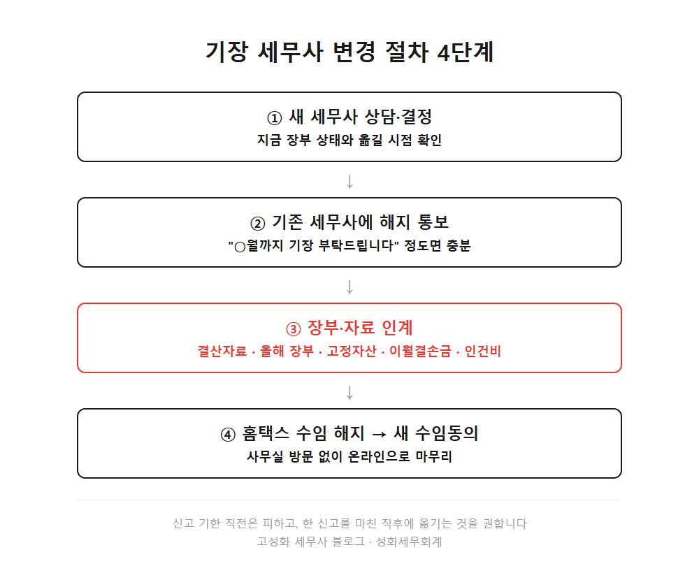
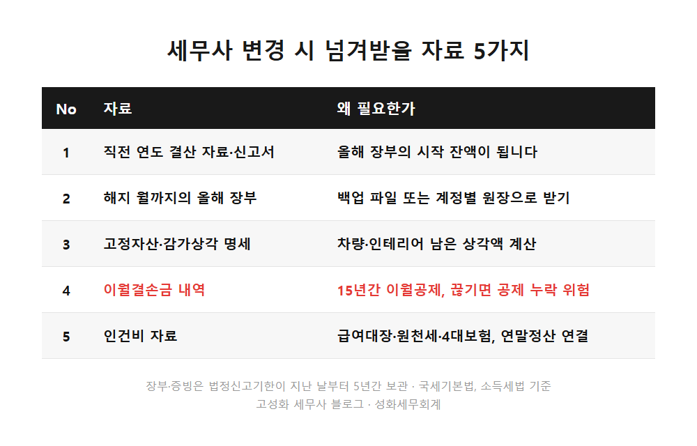
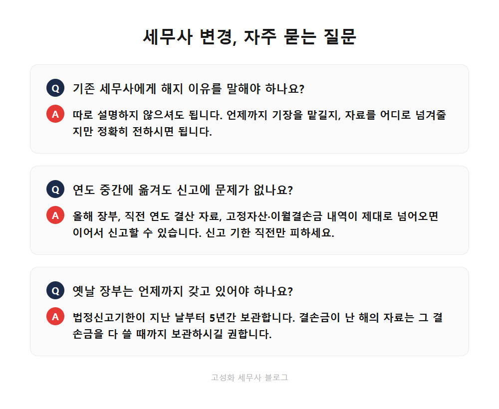

← 세무칼럼 목록
법인·기장

방배동 기장대행 세무사 변경, 넘겨받을 자료 5가지
신고 기간마다 담당자가 바뀌고, 물어본 답이 사흘 뒤에야 오고, 부가세 신고서는 기한 전날 밤에야 받아보셨다면.
기장을 맡긴 세무사를 바꿀까 고민하신 적이 한 번쯤 있으실 겁니다.
방배동 사무실에서 거래처를 새로 맡을 때도 이런 사정으로 찾아오시는 분들이 계십니다.
이 글을 보고 계신 분은 ①지금 세무대리인과 소통이 잘 안 되거나 ②바꾸고 싶은데 중간에 옮겨도 되는지 망설여지거나 ③옮기다가 자료가 빠질까 걱정되는 분일 겁니다.
이 글에서 다루는 내용
- 세무사 변경 절차는 네 단계면 끝납니다
- 넘겨받을 자료 5가지, 이게 빠지면 곤란합니다
- 옮기는 시점과 자료 보관, 실무에서 놓치는 것
한눈에 보기



자주 묻는 질문
기존 세무사에게 해지 이유를 말해야 하나요?
따로 설명하지 않으셔도 됩니다. 언제까지 기장을 맡길지, 자료를 어디로 넘겨줄지만 정확히 전하시면 됩니다.
연도 중간에 옮겨도 신고에 문제가 없나요?
해지 월까지의 장부와 직전 연도 결산 자료, 고정자산·이월결손금 내역이 제대로 넘어오면 이어서 신고할 수 있습니다. 다만 신고 기한 직전은 피하는 게 좋습니다.
옛날 장부는 언제까지 갖고 있어야 하나요?
법정신고기한이 지난 날부터 5년간 보관합니다. 결손금이 난 해의 자료는 그 결손금을 다 쓸 때까지 보관해 두시길 권합니다.
정리하면
세무사 변경은 해지 통보, 자료 인계, 홈택스 수임동의까지 네 단계면 끝납니다. 핵심은 결산 자료, 올해 장부, 고정자산, 이월결손금, 인건비 자료 다섯 가지가 빠짐없이 넘어오는지입니다.
어려운 건 절차가 아니라, 넘어온 자료에 빈 곳이 없는지 확인하는 일입니다. 방배동이나 서초 인근에서 기장을 옮길까 고민 중이시라면, 지금 받아둔 자료만 들고 편하게 문의 주세요. 어떤 게 빠졌는지부터 같이 보겠습니다.
본문 전체와 근거 조문은 블로그에서 확인하실 수 있습니다.